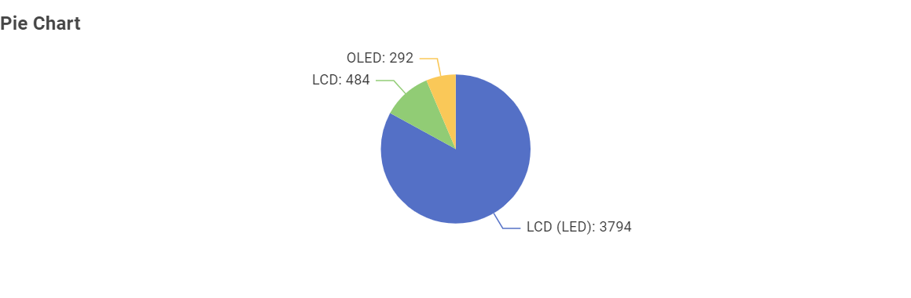
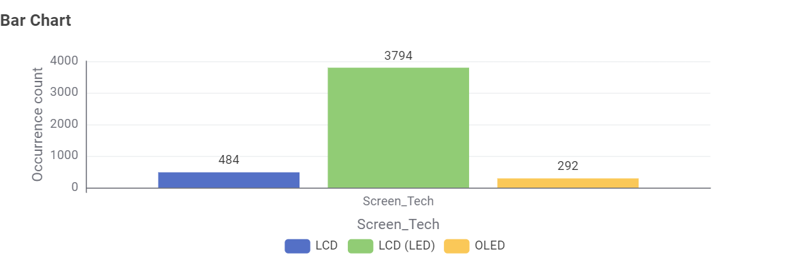
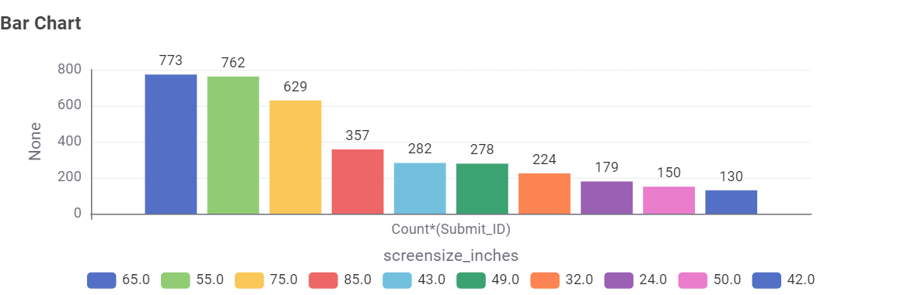
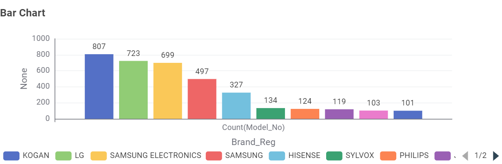
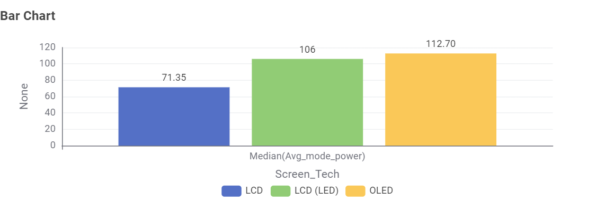
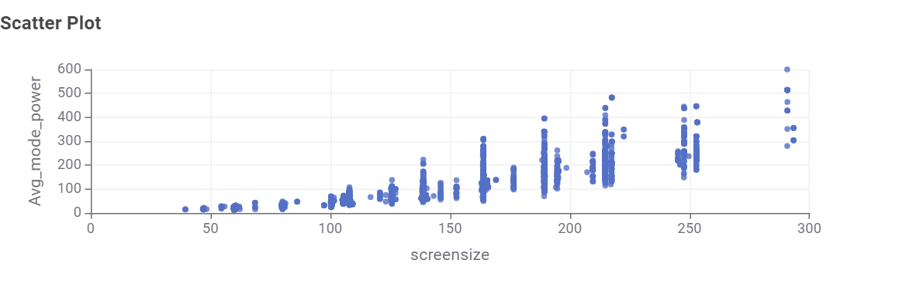
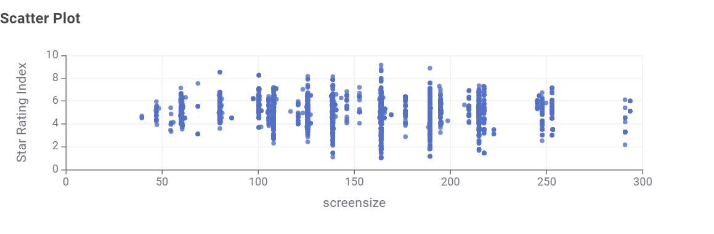
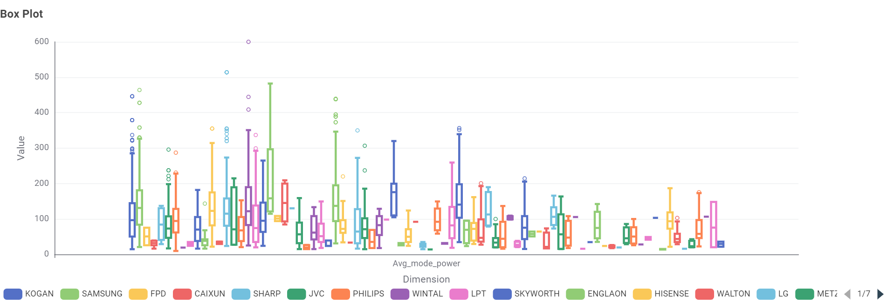
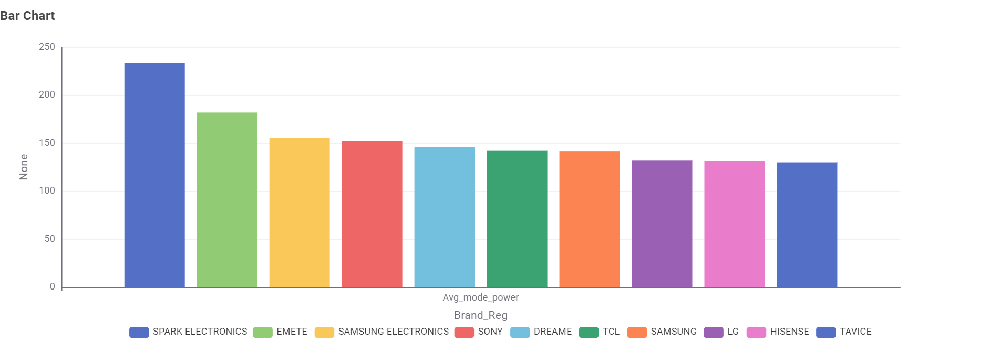

An interactive exploration of the energy efficiency of televisions currently available on the Australian market.
About This Project
This website presents a set of data visualisations built from the Australian Government's Energy Rating Data for Household
Appliances — Labelled Products dataset, published on
data.gov.au.
Our focus is specifically on televisions sold in Australia.
Data is a snapshot of televisions registered at the time of retrieval
and may not reflect the current market.
Televisions
An analysis of televisions currently available on the Australian
market. The charts below answer common questions about screen
technology, size, brand availability, and energy consumption.
Q1. What type of TV screen technologies are currently available in Australia and which are the most frequent?

Fig 1a - Frequency of each technology type. (Pie Chart)

Fig 1b - Frequency of each technology type. (Bar Chart)
Three technologies are available: LCD (LED), LCD, and OLED.
LCD (LED) is the most frequent with 3794 models, followed by LCD (484) and OLED (292).
Q2. What screen sizes are available and which are most frequent?

Fig 2 - Distribution of TV screen sizes (inches).
The three most frequent screen sizes are 65" (773 models),
55" (762 models), and 75" (629 models).
Q3. Which brands have the largest number of models?

Fig 3 - Number of models per brand.
Kogan has the largest number of models (807), followed by LG (723)
and Samsung Electronics (699).
Q4. Which type of screen technology consumes the least amount of power?

Fig 4 - Average power consumption by technology.
LCD consumes the least power on average (71.35 W), followed by
LCD (LED) (106 W) and OLED (112.7 W).
Q5. What is the relationship between screen size and power use?

Fig 5 - Screen size vs. power consumption.
There is a positive relationship between screen size and power use:
as screen size increases, the average mode power consumption also
increases.
Q6. What is the relationship between star rating and screen size?

Fig 6 - Star rating vs. screen size.
There is no clear relationship between star rating and screen size in
this dataset.
Q7. Are there differences in power consumption between brands?

Fig 7a - Power efficiency by brand. (Box Plot)

Fig 7b - Average power consumption by brand. (Bar Chart)
About Us
This website presents a data-driven exploration of television energy
consumption in the Australian market.
About This Project
This site was created as part of COS30045 Data Visualisation Tutorial Exercises at Swinburne University of Technology Sarawak Campus.